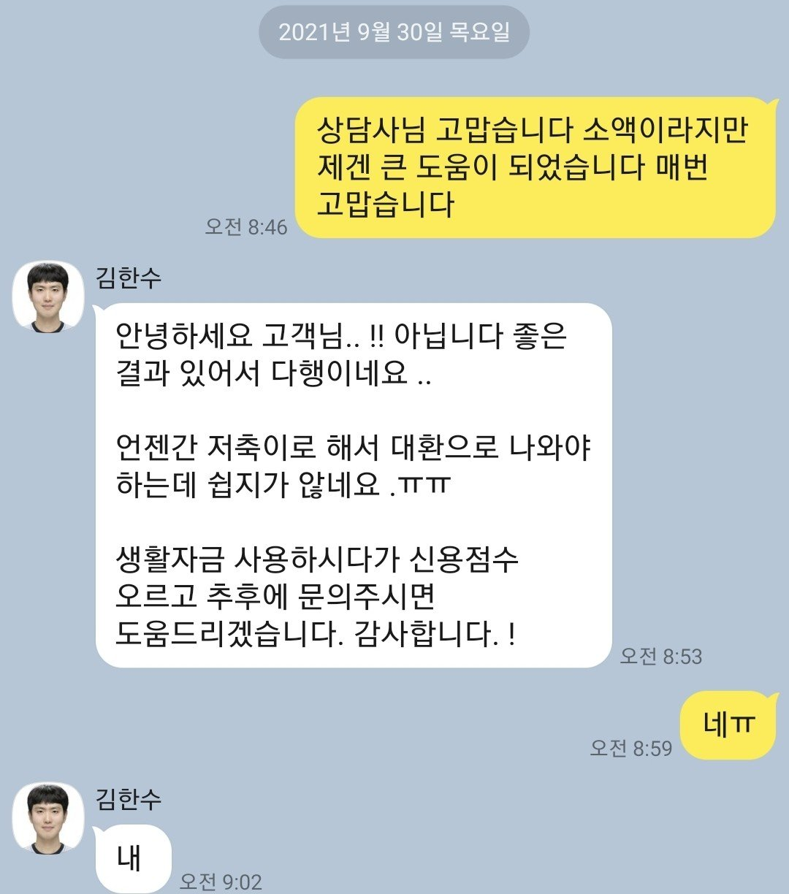

[직장인대출] [직장인대출] 김한수상담사님 고맙습니다
기대출은
저축은행 1건 900만원
대부 4건 4300만원정도
총 5200정도
올크 7등급정도 점수는 4백점후반
힘든여건에 계속 1년간 신용 변동없고
계속적으로 접수 1년여동안 반복했는데 부결되어서
이번에도 안될꺼같았는데
김한수상담사님께 또 부탁해서
또 저축은행은 넣는족족 부결
결국 대부로 접수하여서
대부에서 3
백만원 승인받았습니다.
김한수상담사님 감사합니다.
